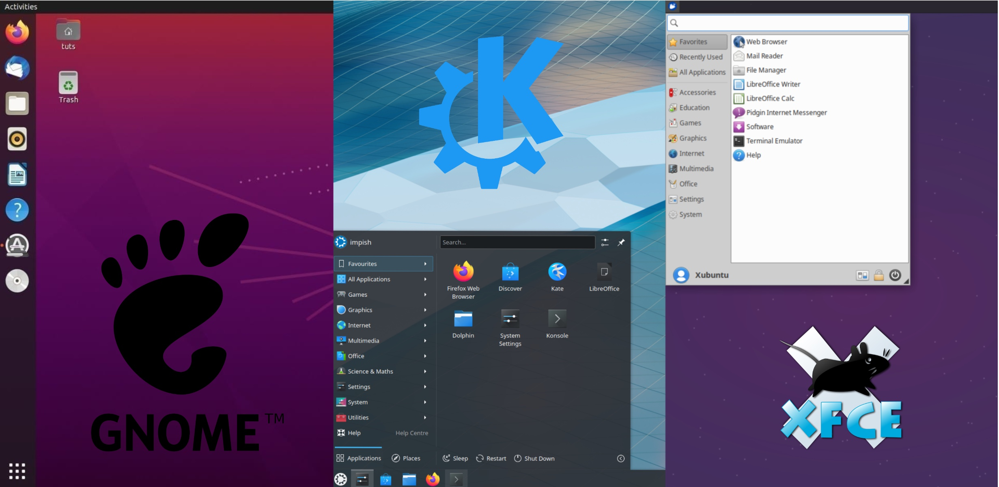

Tema 1:
Introducción a los Sistemas Operativos

Bienvenidos a la primera sesión de nuestro curso de Sistemas Operativos. Este curso es fundamental para entender cómo los computadores realizan sus tareas desde un nivel más profundo, interactuando con el hardware y gestionando recursos. Hoy, vamos a sumergirnos en los aspectos esenciales de los sistemas operativos (SO).
¿Qué es el CPU?
¿Qué es el Sistema Operativo?
El sistema operativo (SO) es un software fundamental que actúa como intermediario entre el hardware de una computadora y los programas de software o aplicaciones que se ejecutan en ella. Es esencialmente el "gerente" de la computadora, encargado de gestionar los recursos del sistema y proporcionar un entorno en el que los programas puedan ejecutarse de manera eficiente y coordinada.
Partes del Sistema Operativo
Kernel:
El núcleo del sistema operativo es la parte más fundamental y esencial. Se encarga de gestionar los recursos del sistema, como la CPU, la memoria, los dispositivos de entrada/salida y el almacenamiento. El kernel proporciona una interfaz para que los programas de usuario puedan acceder y utilizar estos recursos de manera eficiente y coordinada. Es responsable de realizar tareas fundamentales, como la programación de procesos, la gestión de la memoria y la administración de dispositivos.
Interfaz de usuario:
Esta parte del sistema operativo proporciona una interfaz a través de la cual los usuarios pueden interactuar con la computadora y ejecutar programas. Puede ser una interfaz de línea de comandos (CLI), donde los usuarios ingresan comandos de texto para realizar tareas, o una interfaz gráfica de usuario (GUI), que utiliza elementos visuales como ventanas, iconos y menús para facilitar la interacción. La interfaz de usuario facilita el uso del sistema operativo y de las aplicaciones para usuarios de todos los niveles de habilidad.
Administración de archivos:
El sistema operativo gestiona la organización y el almacenamiento de archivos en los dispositivos de almacenamiento, como discos duros, unidades flash y unidades de red. Esto incluye la creación, eliminación, lectura y escritura de archivos y directorios, así como la gestión de permisos de acceso y la protección de la integridad de los datos. La administración de archivos permite a los usuarios organizar y acceder a sus datos de manera eficiente y segura.
1.1 Evolución de los sistemas operativos y tipos de sistemas operativos
Evolución de los sistemas operativos:
La historia de los sistemas operativos es rica y evolutiva, adaptándose constantemente a los avances en la tecnología de hardware y las cambiantes necesidades de los usuarios y aplicaciones. Comenzando con los sistemas simples de los años 50, que no tenían sistema operativo, pasamos a los sistemas batch, donde los trabajos eran procesados en lote sin interacción del usuario. La evolución siguió con la introducción de los sistemas multiprogramados, que permitían la ejecución concurrente de varios programas, aumentando así la utilización del procesador.
Con la llegada de los sistemas de tiempo compartido en los años 60, múltiples usuarios podían interactuar con el sistema simultáneamente, lo que representó un gran avance en la operatividad y la eficiencia. En los años siguientes, vimos el nacimiento de los sistemas operativos personales, como UNIX y Windows, que ahora dominan tanto en entornos empresariales como personales.
Tipos de sistemas operativos:
Sistemas Operativos de Monotarea y Multitarea: Los primeros SO podían ejecutar solo una tarea a la vez. Los modernos SO multitarea pueden ejecutar varias tareas simultáneamente.
Sistemas Operativos de Un Usuario y Multiusuario: Determinan si un solo usuario o varios pueden acceder y utilizar los recursos del sistema simultáneamente.
Sistemas Operativos de Tiempo Real: Diseñados para aplicaciones críticas que requieren respuestas rápidas y precisas.
Sistemas Operativos Distribuidos y de Red: Gestionan y coordinan las operaciones entre múltiples computadoras conectadas en red.
Sistemas Operativos Móviles: Como Android e iOS, diseñados para operar en dispositivos móviles con capacidades de pantalla táctil y conectividad a redes.
1.2 Funcionalidades y características de los sistemas operativos
Los sistemas operativos proporcionan un conjunto de funciones esenciales que incluyen:
Gestión de Procesos: Creación, programación y terminación de procesos.
Gestión de Memoria: Asignación y administración de la memoria para procesos y para el propio SO.
Gestión de Almacenamiento: Organización y control del almacenamiento de datos a largo plazo en dispositivos de almacenamiento.
Gestión de Dispositivos de E/S: Abstracción y gestión de dispositivos de entrada y salida.
Sistemas de Archivos: Organización y gestión de los datos en los sistemas de almacenamiento.
Seguridad y Acceso: Protección del acceso a los datos y recursos del sistema.
1.3 Conceptos de hardware relacionados al sistema operativo
Estado de CPU, Canales de E/S, Jerarquía de Memoria y Microprogramación:
Estado de CPU: Se refiere al conjunto actual de registros de la CPU y su modo operativo, esencial para la gestión de tareas y la ejecución de procesos.
Canales de E/S: Son rutas dedicadas que permiten la transferencia de datos entre la CPU y los dispositivos periféricos, reduciendo la carga de la CPU y optimizando el rendimiento.
Jerarquía de Memoria: Organiza el almacenamiento en niveles que varían en tamaño y velocidad, desde los registros internos hasta los sistemas de almacenamiento masivo.
Microprogramación: Es un nivel de programación que permite a la CPU ejecutar instrucciones de máquina; se sitúa entre el hardware y el software.
Estructura y organización de los sistemas operativos:
Los sistemas operativos pueden estar estructurados de muchas maneras, incluyendo:
Monolíticos: Un gran bloque de código que contiene todas las funcionalidades necesarias, difícil de manejar pero muy integrado.
Capas: Organizados en niveles, donde cada capa solo utiliza funciones de la capa inferior.
Microkernel: El kernel incluye solo las funciones esenciales; el resto de servicios opera en espacio de usuario.
Módulos o Plugins: Permite extender las capacidades del sistema operativo de manera dinámica.